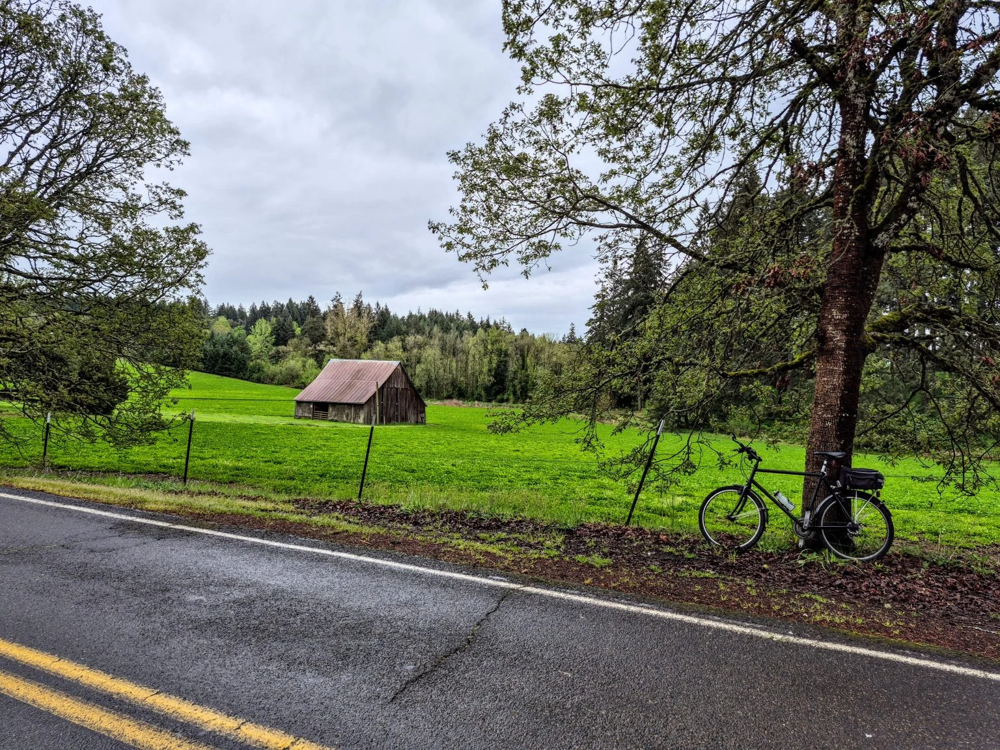
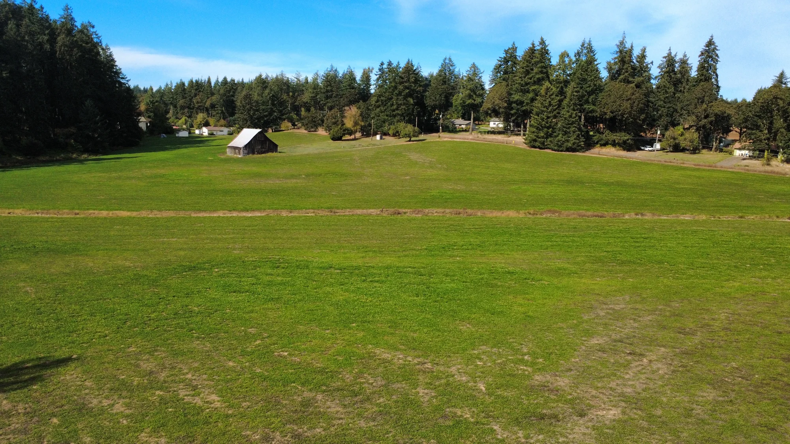
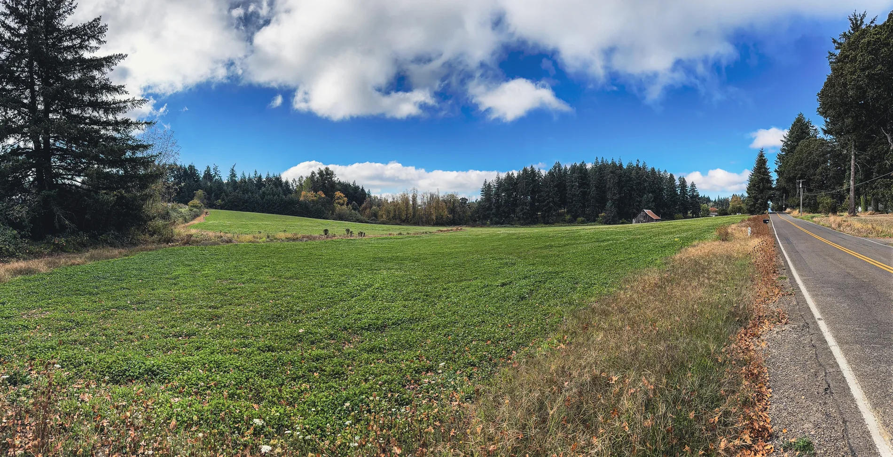

Saving Powers Alliance · Benton County, Oregon
OUR COMMUNITY. OUR VOICE.
Thoughtful land use starts with neighbors.
We’re a community-led Alliance advocating for responsible development, transparent decisions, and a meaningful voice for the people who live here.
Featured campaign · NW Powers Avenue
The Northside Church land-use case.
Benton County voted 2–1 on October 20, 2026, to adopt its approval order for the Northside Church proposal. Neighbors have raised concerns about its scale, road safety, and compatibility with surrounding rural homes.
Source: county case record LU-25-067. Confirm the current appeal status against the latest filings.

Our purpose · Beyond Powers Avenue
Stronger neighborhoods. Better decisions.
Saving Powers began around one proposal. The questions it raised matter throughout Benton County.
Residents deserve access to the facts behind land-use proposals, fair application of local standards, and real opportunities to participate before decisions shape their neighborhoods for decades.
Follow community planningBeyond our featured campaign
Community planning, made easier to follow.
Follow public meetings, development proposals, and local policy discussions. Learn where to find the official materials and how to participate.

Get involved
Small actions build a stronger community.
Attend a meeting, share reliable information, support the Northside effort, or connect with neighbors who care about Benton County.